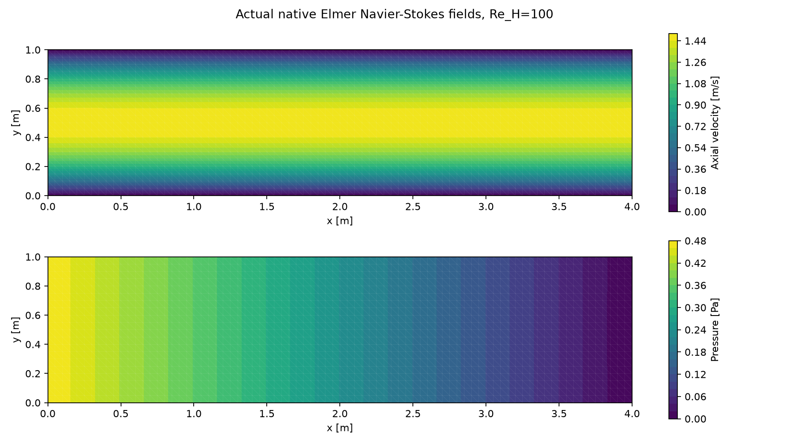

Hafif CFD araçları ve kısıtlardan karşılaştırma raporuna iş akışı
18 Ekim 2026 · Yerel kurulum, gerçek çözücü testi ve arayüz güncellemesi
SU2'nin yanına taşınabilir Elmer CFD ve ElmerGUI eklendi. Basit arayüz artık görev/kısıt girişi, analizler ve sonuçlar sekmelerinden oluşuyor. Araştırma → aday CAD → ön analiz → CFD → eleme/sıralama → rapor için birimli, kanıt isteyen görev kaydı oluşturuyor. Herhangi bir uçak geometrisini bütünüyle doğrulanmış biçimde otomatik değerlendirme seviyesine henüz ulaşılmadı.
Mühendislik Merkezi · bütün proje durumu · önceki CAD/VLM/SU2 yeterlilik raporu
1. ANSYS öncesi hangi CFD araçları var?
| Araç | Kurulum / görev | Gerçekte doğrulanan kapsam |
|---|---|---|
| SU2 v8.5.0 | Önceden kurulu; resmi paket yaklaşık 28 MB | Euler ve üç ağda 2D viskoz RANS; basınç, sürtünme, y+ ve kuvvet geçmişi |
| Elmer 26.2 | Bu tur kuruldu; taşınabilir GUI/çözücü paketi 219.035.726 bayt | Gerçek sıkıştırılamaz Navier–Stokes, üç ağda laminer kanal; analitik çözüm ve debi dengesi |
| Gmsh | Önceden kurulu; ağ ve alan görüntüleme | SU2/Elmer basınç alanlarının native okunabilen .pos görünümü |
| OpenFOAM | Araştırıldı; kurulmadı | Bu bilgisayarda WSL kurulu değil; alternatif Windows dağıtımı daha büyük |
| ANSYS | Ertelendi | Kurulum ve lisans doğrulaması yapılmadı |
SU2 ve Elmer gerçek akış denklemlerini ağ üzerinde çözer. Elmer, sonlu eleman tabanlı çok fizik çözücüsüdür; CFD için Navier–Stokes modülü kullanıldı. CSC'nin Elmer açıklaması, resmi taşınabilir Windows paketleri.
OpenFOAM'ın resmi Windows yolu WSL gerektiriyor. blueCFD'nin OpenFOAM 12/ParaView/MSYS2 içeren Windows kurucusu 1173 MiB olarak listeleniyor. Hafif kurulum isteğine uygun olarak şu aşamada SU2 + Elmer seçildi; WSL veya sistem ayarı kurulup değiştirilmedi. OpenFOAM Windows tarifi, blueCFD paket bilgisi.
Elmer arşivi resmi CSC/Funet sunucusundan HTTPS ile alındı; ZIP CRC ve yerel SHA256 kaydedildi. Listede upstream SHA256 bulunmadığından bağımsız upstream hash eşleşmesi iddia edilmiyor. Native log gerçek sürümü 26.2-unknown, Rev: Release, derleme 2026-08-05 olarak bildirdi. Proje içi kurulum, süreç ortam değişkenleri ve tam dosya yolları kullanılıyor; global PATH değiştirilmedi.
“Hafif” burada kurulum yükünü anlatıyor. Büyük bir üç boyutlu türbülanslı model, bu araçlarda da uzun sürebilir; ağ, yakınsama ve akış fiziği hesap maliyetini belirler.
2. Yeni gerçek CFD testi
ElmerGrid ile Gmsh ağı Elmer'e çevrildi; ElmerSolver gerçek Navier–Stokes denklemlerini çözdü. Referans, tam gelişmiş düzlem Poiseuille akışının analitik çözümü. Test girdileri varsayım, native sonuçlar sayısal ölçüm olarak sınıflıdır; gerçek İHA şartları değildir.
Koşullar: kanal L=4 m, H=1 m; rho=1 kg/m³, mu=0,01 Pa·s, ortalama hız=1 m/s, Re(H)=100. Giriş parabolik hız, duvar kaymaz, çıkış basıncı sıfır. Beklenen alanlar: u=6y(1−y), v=0 ve p=0,12(4−x), SI birimleriyle.
| Akış hücresi | Hız alanı bağıl L2 hatası | Basınç alanı bağıl L2 hatası | Giriş–çıkış debi farkı |
|---|---|---|---|
| 200 | %1,315 | %3,419 | %0,842 |
| 800 | %0,463 | %1,384 | %0,273 |
| 3200 | %0,123 | %0,376 | %0,080 |
Üç ağda doğrusal olmayan çözüm değişimi 10⁻⁹'un altına indi. Ağ inceldikçe hız/basınç hataları azaldı. İnce ağ, belirlenen hız <%2, basınç <%5 ve debi dengesizliği <%0,2 ölçütlerini geçti. İlk alan-adlandırma hatalı deneme reddedildi, düzeltme yeni çalıştırmada doğrulandı; ham kayıtlar korundu.


Elmer ölçümleri ve ham dosya yolları. İnce alanın basıncı Gmsh biçimine çevrildi ve 3200 üçgenle tekrar okundu. Bu test çözücü/birim/sınır şartı bağlantısını bilinen bir fizik çözümüyle kontrol eder; Elmer'de dış aerodinamik, türbülans, geçiş veya üç boyutlu uçak yeterliliği kazandırmaz.
Önceki SU2 RANS çalışmasının sürükleme ağ kabulü hâlâ açık: orta→ince ağ CD farkı %22,84, max y+=1,744. Elmer'deki geçen kanal testi bu açığı kapatmış sayılmadı. SU2 kabul kontrolleri.
3. Arayüz nasıl çalışıyor?
İlk sekmede görev ve bilinen kısıtlar girilir: hedef hız, süre, faydalı yük, irtifa, maksimum açıklık/kütle/stall hızı ve bütçe. Boş alanlar bilinmiyor kalır. Açık sıfır ile boş girdi ayrılır; km/sa → m/s ve dakika → saniye dönüşümleri kayda alınır. Özgün değerler ve kullanıcı kaynağı da korunur. Diğer geometrik, üretim veya kullanım koşulları görev metnine yazılabilir.

Görevi kaydet ve ajanla başla, yapılandırılmış girdiyi ve yedi adımlı kabul sözleşmesini görev dosyasına yazar, sonra mevcut yerel Codex başlatıcısını açar. Her adım bekliyor/çalışıyor/tamamlandı/uygulanmıyor/engelli olarak izlenir. Tamamlanan adımda kanıt, uygulanmayan adımda gerekçe gerekir. Yalnız kaydet ajan oturumu başlatmadan kaydeder.
İkinci sekmede araç sınamaları ve uygulama/alan açma düğmeleri bulunur. Bu düğmeler kayıtlı yeterlilik örneklerini tekrarlar; serbest kullanıcı tasarımını hazır örneğe dönüştürmez. Üçüncü sekme raporları ve görev/girdi klasörlerini açar.
Arayüz aynı dosya ve komut girişlerinin üstündedir. Ajanın bu pencereyi kullanması gerekmiyor; bu sohbetten de bütün araçlara erişilebilir. Kullanım için yeni bir mühendislik modeli eğitilmedi. Yeni bir LLM oturumu test amacıyla otomatik başlatılmadı; görev aktarımının dosya ve başlatma hazırlığı kontrol edildi.
4. İstediğin uçtan uca aşamaya ulaştık mı?
Kısmen. Araştırma ve araçlarla yürütülen görev akışının parçaları var; bütün geometri ve akış rejimlerine genellenmiş, doğrulanmış bir otomatik tasarım sistemi henüz yok.
| Adım | Hazır taraf | Açık taraf |
|---|---|---|
| Kısıtları almak | Form/sohbet, SI birimleri, kaynak ve görev kaydı | Göreve özgü eksik kritik girdiler tamamlanmalı |
| İnternetten aday araştırmak | Ajan bu oturumdaki web araçlarını kullanabilir; kaynak/tarama sözleşmesi görevde | Arayüzün kendi başına sınırsız araştırma yapan ayrı bir motoru yok |
| CAD çizmek | Tanımlı kanat/nervür ailesi ölçü kontrolüyle çalışıyor; OpenVSP/FreeCAD bağlantıları var | Yeni geometri aileleri ayrıca geliştirilip sınanmalı; Fusion motor testi açık |
| Ön analiz yapmak | Gerçek XFOIL/VSPAERO ve yapısal çözücü bağlantıları | Tüm uçak güç/enerji/trim/kararlılık ve yük modeli tamamlanmadı |
| CFD yapmak | Native SU2 Euler/RANS ve Elmer Navier–Stokes çalışıyor | Keyfi CAD için uygun hacim/sınır-tabakası ağı; CAD/analiz eşdeğerliği ve sürükleme kabulü |
| Eleme ve sıralama | Açık kısıtlar, koşullu sıra, başarısız/eksik CFD'yi kullanmama kontrolleri | Nihai sıra için her adayın kendi kapsamına uygun kabul edilmiş kanıtı gerekiyor |
| Rapor vermek | CAD, alanlar, grafikler, kaynaklar ve açık kontroller birlikte sunuluyor | Bilinmeyen girdilere bağlı fiziksel uygunluk kararı verilemiyor |
“Olabilecek tüm ihtimaller” yerine tanımlı tasarım alanı, aday bütçesi ve kapsama kaydı gerekiyor. Her görevde araştırılan profil/yerleşim/ölçü aileleri, elenme sebepleri ve taranmayan seçenekler belirtilmeli. Sonlu bir aramadan bütün mümkün tasarımların tüketildiği sonucu çıkarılamaz.
5. Sıralama nasıl sınandı?
Önceden çözülen üç dikdörtgen kanat, yeni eleme/sıralama koduna verildi. Bu tur o kanatlar yeniden çözülmedi. Test varsayımı maksimum açıklık=2,1 m: AR10 sınırı aştığı için elendi. Kalanlarda tahmini izole kanat sürüklemesine göre koşullu sıra AR8 → AR6 çıktı.
Nihai kazanan verilmedi. Bu adayların kendi geometri/koşullarıyla kabul edilmiş CFD'si yok; 2D başka bir profil çözümü onların 3D kanat CFD'si sayılamaz. Sonuç dosyasının hash'i, geometri özeti, koşul özeti ve analiz kapsamı uyuşmadan CFD kabulü aktarılamıyor. Gerçek uçak kütle/güç/kararlılık/yapı kontrolleri de ayrı açık.
Koşullu karşılaştırma tablosu · kanıt ve gerekçeler · 17 girdi/aktarımı/sıralama kontrolü.
Kontroller, eksik CFD'nin nihai kazanan üretmemesini, değişmiş/ilgisiz kanıtın reddini, sert kısıta uymayan düşük-sürüklemeli adayın elenmesini ve bilinmeyen metriğin sıralanmamasını kapsıyor. Bu testler fiziksel tasarım güvencesi değildir.
6. Sonraki gerçek görev
Gerçek kısıtlarını ilk sekmeye veya bu sohbete ver. İlk somut çıktı; gereksinim/eksik veri tablosu, kaynaklı ve sınırlı aday kümesi, hangi adayda hangi CAD/ön analiz/CFD kontrolünün yapılacağı ve karşılaştırma ölçütü olmalı. Sonra araçlar o geometri ve şartlar için çalıştırılır; başarısız kabul ve veri eksikliği raporda açık kalır.
Mevcut gerçek İHA görev ve kütle dosyaları bu kurulumda doldurulmadı; kavramsal sekiz adım bekliyor. Araçların geçmesi tasarımın tamamlandığı, uçuşa elverişlilik veya halüsinasyonsuzluk anlamına gelmez.